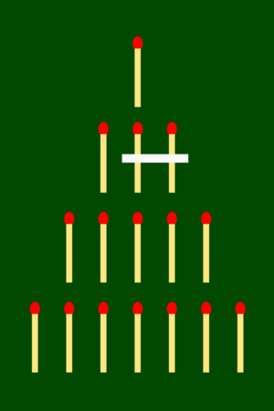
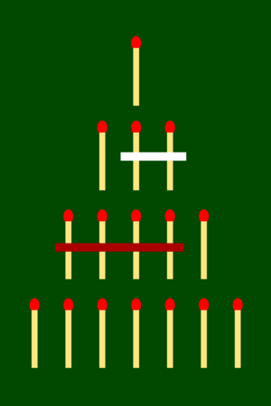
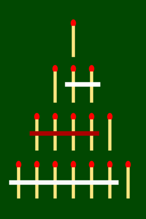

Spielfeld zu Beginn
Zug 1: weiß beginnt
Zug 2: rot
Zug 3: weiß
Zug 4: rot
Das Teilerspiel ist ein von Christiane Licht selbst erdachtes Spiel für zwei Personen. Es funktioniert nach dem Prinzip eines Nim- oder Misère-Spiels [1]. Mit diesem Spiel gewann sie 2010 den Regionalwettbewerb „Jugend forscht“ in Nordrhein-Westfalen (Deutschland) [2][3].
Bei dieser Art von Spiel entnehmen die Mitspieler Elemente aus einer Menge. Dazu können zum Beispiel Streichhölzer aufgelegt und wieder weggenommen werden, oder die Spieler zeichnen Linien auf Papier und streichen diese durch. Die Objekte werden pyramidenförmig angeordnet. Die Spieler können abwechselnd einen oder mehrere nebeneinanderliegende Streichhölzer einer waagrechten Ebene entfernen. Je nach Spiel gewinnt diejenige, die das letzte Streihholz entfernt (Nim) oder die den Gegner dazu zwingt das letzte Streichholz zu nehmen (Misère). Folgende Bilder zeigen ein typisches Nim-Spiel.
|
 |  |  | |
Spielfeld zu Beginn |
Zug 1: weiß beginnt |
Zug 2: rot |
Zug 3: weiß |
Zug 4: rot |
In diesem Beispiel endet das Spiel sehr schnell, da die Spieler jeweils große Gruppen entnehmen. Spieler weiß streicht in Zug 3 die letzte verbliebene Gruppe an Streichhölzern. Ab hier können die Spieler nur mehr einzelne Elemente entfernen und den Ausgang nicht mehr beeinflussen.
Das Teilerspiel verbindet den Spieltyp von Misère auf eine clevere Art und Weise mit Zahlentheorie. Anstatt mit waagrecht angeordneten Objekten spielt man mit Zahlen und deren Teilern. Wird eine Zahl weggenommen, werden auch alle Zahlen entfernt die diesen Wert als Teiler haben. Eine 3 entfernt zum Beispiel 6, 9, 12 etc.
Das Spielfeld wird aus den Teilern einer beliebig wählbaren Anfangszahl aufgebaut. Als Standardwert ist 2520 gesetzt.

Um genügend Spielfelder zu haben, empfiehlt es sich Zahlen mit vielen Teilern zu wählen. Am besten im Bereich zwischen 1000 und 10 000.
Die Spieler wählen abwechselnd eine Zahl und entfernen damit Felder aus dem Spiel. Ähnlich zum Spielprinzip von Misère verliert der Spieler, welcher die 1 anklicken muss (oder anklickt). Die Welcher Spieler beginnt kann beim Spielstart festgelegt werden.
Es ist auch möglich gegen den Computer zu spielen. Dazu wird beim Spieltyp der Punkt 1P/Computer ausgewählt.
Der Benutzer hat dabei Möglichkeit zwischen verschiedenen Strategien des Computergegners zu wählen. Derzeit sind die folgenden Strategien verfügbar:
| Strategie | Erläuterung |
|---|---|
| Zufällig | Der Computer wählt zufällig eine Zahl |
| Höchste | Der Computer wählt immer die höchstmögliche Zahl |
| Niedrigste | Der Computer wählt immer die kleinstmögliche Zahl |
Das Spiel lässt sich gut in der Schule zur Festigung der Begriffe Teiler und Teilbarkeit einsetzen.
Das Teilerspiel greift eine spieltheoretische Frage auf: Gibt es für jede beliebige Anfangszahl immer einen optimalen Gewinnzug für den Spieler der beginnt, egal welche Zahlen der andere Spieler anschließend streicht? Mit zahlentheoretischen Methoden kann man eine optimale Gewinnstrategie entwickeln.
Das bekannte Spiel Tic-Tac-Toe hat keine optimale Gewinnstrategie. Spielen beide Spieler optimal, endet das Spiel
immer in einem Unentschieden.
In Vier Gewinnt hingegen ist es möglich, dass der beginnende Spieler immer gewinnt - sofern er optimal spielt.
Auch wenn der andere Spieler bestmöglich spielt kann man nicht gewinnen.
[1] Mehr Information zu Nim-Spielen (Wikipedia)
https://de.wikipedia.org/wiki/Nim-Spiel
[2] Referenz zu Jugend forscht
https://www.jugend-forscht.de/projektdatenbank/das-teilerspiel-teilen-oder-nicht-teilen-das-ist-hier-die-frage.html
[3] Referenz zu Jugend forscht
https://www.kappenberg.com/hosted/jufo/arbeiten.php5?jahr=-1&eintrag=1206
Bilder zum Nim Spiel
Urheber (Pseudonym) Uncopy.
Quelle https://commons.wikimedia.org/wiki/File:NimGame.svg.
Lizensiert unter CC BY-SA 3.0
{kind=link}